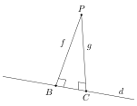

Eclats de vers : Matemat : Constructions géométriques
Table des matières
1. Introduction
Les propriétés des quadrilatères permettent de réaliser facilement des constructions d’objets géométriques fondamentaux. Nous passons en revue les principaux.
2. Perpendiculaire à une droite passant par un point donné
2.1. Construction et existence
Soit un point \(P\) et une droite \(d\). Nous allons prouver par une construction géométrique l’existence de la droite \(p\), perpendiculaire à \(d\) et passant par \(P\). Le schéma ci-dessous illustre cette construction :

On définit :
\[ \mathscr{L} = \abs{AB} \]
Voici les étapes de cette méthode de construction :
- ouvrir le compas d’un rayon \(R\) supérieur à la distance entre le point \(P\) et la droite \(d\)
- tracer un arc de cercle \(\mathscr{C}_1\) de centre \(P\) et de rayon \(R\)
- on note \(A\) et \(B\) les deux points d’intersections de la droite \(d\) avec l’arc de cercle \(\mathscr{C}_1\)
- ouvrir le compas d’un rayon \(r\) à peu près compris entre
\(2 \ \mathscr{L} / 3\) et \(\mathscr{L}\)
- si le rayon est trop près de \(\mathscr{L}/2\), les points d’intersection vont être très proches, ce qui peut poser un problème de précision
- tracer un arc de cercle \(\mathscr{C}_2\) de centre \(A\) et de rayon \(r\)
- tracer un arc de cercle \(\mathscr{C}_3\) de centre \(B\) et de rayon \(r\)
- on note \(D\) et \(E\) les deux points d’intersections de \(\mathscr{C}_2\) et \(\mathscr{C}_3\)
- tracer la droite \(p = (PE)\)
- on note \(F\) le point d’intersection entre \(d\) et \(p\)
Par construction, on a :
\[ \abs{AP} = \abs{PB} \]
\[ \abs{AE} = \abs{EB} \]
Le quadrilatère \(AEBP\) est donc un cerf-volant. Les segments \([A,B]\) et \([P,E]\) sont les diagonales de ce cerf-volant : ils sont donc perpendiculaires. La droite \(p = (PE)\) est bien perpendiculaire à la droite \(d = (AB)\) et passe par \(P\) :
\[ P \in p = (PE) \]
Les propriétés des diagonales du cerf-volant nous montrent aussi que :
\[ \abs{AF} = \abs{FB} \]
La droite \(p\) est également la médiatrice du segment \([A,B]\).
2.2. Unicité
Soit un point \(P\) et une droite \(d\). La construction ci-dessus nous montre qu’il existe au moins une droite \(p\), perpendiculaire à \(d\) et passant par \(P\). Cette droite est-elle unique ? Supposons un instant qu’il y ait au moins deux de ces perpendiculaires, disons \(f\) et \(g\) :

On a alors les intersections distinctes :
\[ f \cap d = \{ A \} \]
\[ g \cap d = \{ B \} \]
Les droites \(f\) et \(g\) ne sont donc pas confondues. Comme \(f\) et \(g\) sont perpendiculaires à \(d\), les angles \(\angleflex{CBP}\) et \(\angleflex{PCB}\) sont des angles droits. Leur somme vaut :
\[ \abs{\angleflex{CBP}} + \abs{\angleflex{PCB}} = 180^\circ \]
La somme des deux angles internes à \(f\) et \(g\) et situés du même côté de \(d\) vaut 180°. La réciproque du cinquième axiome d’Euclide nous garantit alors que \(f\) et \(g\) sont parallèles. Comme ces droites ne sont pas confondues, on doit avoir :
\[ f \cap g = \emptyset \]
Mais le point \(P\) appartient aux deux droites, ce qui implique :
\[ P \in f \cap g = \emptyset \]
ce qui est manifestement une absurdité. On en conclut que notre hypothèse est invalide. Il existe donc au maximum une seule droite \(p\), perpendiculaire à \(d\) et passant par \(P\).
2.3. Conclusion
Nous avons montré qu’il existe une et une seule droite \(p\), perpendiculaire à la droite \(d\) et passant par le point \(P\) :

3. Distance entre un point et une droite
La distance entre deux droites parallèles est la longueur d’un segment qui les relie et leur est perpendiculaire.
Nous nous inspirons de ce résultat pour définir la distance entre un point \(A\) et une droite \(d\) comme étant la longueur d’un segment :
- qui relie le point \(A\) à la droite \(d\)
- qui est perpendiculaire à la droite \(d\)
Dans le schéma ci-dessous, la distance entre le point \(A\) et la droite \(d\) est la longueur du segment \([A,B]\) :

On a donc :
\[ \distance(A,d) = \abs{AB} \]
Il n’y a qu’un seul point \(B\) qui vérifie :
\[ [A,B] \perp d \]
Contrairement à la distance entre deux droites, il n’y a qu’un seul segment qui permet de mesurer la distance entre un point et une droite.
4. Parallèle à une droite passant par un point donné
4.1. Par un cercle
4.2. Perpendiculaire d’une perpendiculaire
Le schéma ci-dessous illustre la construction d’une parallèle à une droite \(d\) passant par le point \(P\) :

On procède comme suit :
- tracer la droite \(m\), perpendiculaire à \(d\) et passant par \(P\)
- tracer la droite \(n\), perpendiculaire à \(m\) et passant par \(P\)
On définit :
\[ \mathscr{L} = \abs{AB} \]
Voici les étapes détaillées de cette méthode de construction :
- droite \(m\), perpendiculaire à \(d\) et passant par \(P\)
- ouvrir le compas d’un rayon \(R\) supérieur à la distance entre le point \(P\) et la droite \(d\)
- tracer un arc de cercle \(\mathscr{C}_1\) de centre \(P\) et de rayon \(R\)
- on note \(A\) et \(B\) les deux points d’intersections de la droite \(d\) avec l’arc de cercle \(\mathscr{C}_1\)
- ouvrir le compas d’un rayon \(r\) à peu près compris entre \(2 \ \mathscr{L} / 3\) et \(\mathscr{L}\)
- tracer un arc de cercle \(\mathscr{C}_2\) de centre \(A\) et de rayon \(r\)
- tracer un arc de cercle \(\mathscr{C}_3\) de centre \(B\) et de rayon \(r\)
- on note \(D\) et \(E\) les deux points d’intersections de \(\mathscr{C}_2\) et \(\mathscr{C}_3\)
- tracer la droite \(m = (DE)\)
- on note \(F\) le point d’intersection entre \(d\) et \(m\)
- droite \(n\), perpendiculaire à \(m\) et passant par \(P\)
- ouvrir le compas d’un rayon \(s\)
- tracer un cercle \(\mathscr{C}_4\) de centre \(P\) et de rayon \(s\)
- on note \(G\) et \(H\) les deux points d’intersections de la droite \(m\) avec le cercle \(\mathscr{C}_4\)
- ouvrir le compas d’un rayon \(t\)
- tracer un arc de cercle \(\mathscr{C}_5\) de centre \(G\) et de rayon \(t\)
- tracer un arc de cercle \(\mathscr{C}_6\) de centre \(H\) et de rayon \(t\)
- on note \(I\) et \(J\) les deux points d’intersections de \(\mathscr{C}_5\) et \(\mathscr{C}_6\)
- tracer la droite \(n = (IJ)\)
La droite \(m\) étant perpendiculaire à \(d\) et \(n\), on a :
\[ n \parallel d \]
Par construction, \(n\) est aussi la médiatrice du segment \([G,H]\). La droite \(n\) passe donc par le milieu de \([G,H]\), c’est-à-dire le point \(P\).
5. Médiatrice
Le schéma ci-dessous illustre la construction de la médiatrice \(m\) du segment \([A,B]\) :

On définit :
\[ \mathscr{L} = \abs{AB} \]
Voici les étapes de cette méthode de construction :
- ouvrir le compas d’un rayon \(r\) à peu près compris entre
\(2 \ \mathscr{L} / 3\) et \(\mathscr{L}\)
- si le rayon est trop près de \(\mathscr{L}/2\), les points d’intersection vont être très proches, ce qui peut poser un problème de précision
- tracer un arc de cercle \(\mathscr{C}_1\) de centre \(A\) et de rayon \(r\)
- tracer un arc de cercle \(\mathscr{C}_2\) de centre \(B\) et de rayon \(r\)
- on note \(D\) et \(E\) les deux points d’intersections de \(\mathscr{C}_1\) et \(\mathscr{C}_2\)
- tracer \(m = (DE)\)
Par construction, on a :
\[ \abs{AD} = \abs{AE} = \abs{BD} = \abs{BE} \]
Le quadrilatère \(ODIE\) est donc un losange. Les segments \([A,B]\) et \([D,E]\) sont les diagonales du losange \(ODIE\) : ils sont donc perpendiculaires et se coupent en leur milieu. La droite \(m = (DE)\) est bien la médiatrice du segment \([A,B]\)
6. Bissectrice
Le schéma ci-dessous illustre la construction de la bissectrice \(b\) de l’angle \(\angleflex{AOB}\) :

Voici les étapes de cette méthode de construction :
- ouvrir le compas d’un rayon \(r_1\)
- tracer un arc de cercle \(\mathscr{C}_1\) de centre \(O\) et de rayon \(r_1\)
- soit \(D\) l’intersection de la droite \((OA)\) avec \(\mathscr{C}_1\)
- soit \(E\) l’intersection de la droite \((OB)\) avec \(\mathscr{C}_1\)
- ouvrir le compas d’un rayon \(r_2\)
- tracer un arc de cercle \(\mathscr{C}_2\) de centre \(D\) et de rayon \(r_2\)
- tracer un arc de cercle \(\mathscr{C}_3\) de centre \(E\) et de rayon \(r_2\)
- le rayon de \(\mathscr{C}_3\) est donc le même que celui de \(\mathscr{C}_2\)
- soit \(I\) l’intersection de \(\mathscr{C}_2\) avec \(\mathscr{C}_3\)
- tracer \(b = (OI)\)
Par construction, on a :
\[ \abs{OD} = \abs{OE} \]
\[ \abs{DI} = \abs{EI} \]
Le quadrilatère \(ODIE\) est donc un cerf-volant. La diagonale \([O,I]\) est perpendiculaire à la séparation \([D,E]\) entre les deux triangles isocèles qui composent ce cerf-volant : la droite \(b = (OI)\) est bien la bissectrice de l’angle \(\angleflex{DOE} = \angleflex{AOB}\).